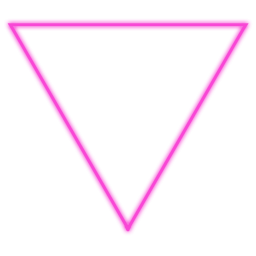
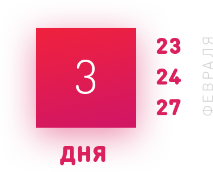

ВЕБ-ДИЗАЙН-ОНЛАЙН-МАРАФОН 23, 24 И 27 ФЕВРАЛЯ 19:00
LANDING PAGE
УЧАСТВУЙТЕ В СЕРИИ МАСТЕР-КЛАССОВ ПО ДИЗАЙНУ И ВЕРСТКЕ СОВРЕМЕННОГО LANDING PAGE С ПРОВЕРКОЙ РАБОТЫ И ПРИЯТНЫМИ ПРИЗАМИ

КАК ЭТО БУДЕТ

23.02День дизайна Мы разберемся с тем, каким должен быть Landing Page и дизайн сайтов в 2017 году, а также разработаем свой собственный уникальный дизайн лендинга, согласно всех правил и понятий
23.02День верстки Каждый из нас сверстает созданный ранее макет лендинга с помощью HTML/CSS/JS. Мы используем все необходимые инструменты для полноценной верстки сайта с нуля, даже если у вас не было опыта в этой сфере
25.02День результатов Каждая работа будет разобрана в "прямом эфире", вы получите компентентую обратную связь. Каждый участник получит онлайн-подарок, а авторы лучших работ - большие скидки на обучение! Об этом далее на странице.